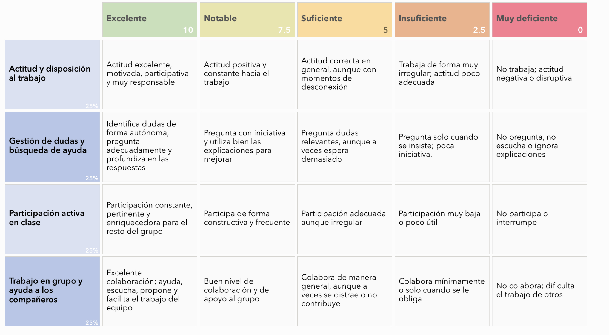

Evaluación de la Situación de Aprendizaje
La evaluación de este proyecto no se basa solo en una nota final, sino que se realizará de forma continua a lo largo de todo el proceso. El objetivo es conocer cómo vais aprendiendo, ayudaros a mejorar y valorar tanto vuestro trabajo como el resultado final.
Para ello, se utilizarán dos herramientas principales. Al inicio, realizaréis un pequeño cuestionario con Plickers que servirá para conocer vuestros conocimientos previos sobre funciones lineales y poder adaptar mejor las actividades a vuestro nivel. Este cuestionario no contará para nota, sino que ayudará al profesor a detectar posibles dificultades y organizar mejor el trabajo en clase.
A lo largo del proyecto, y especialmente al final, se utilizará una rúbrica para evaluar vuestro trabajo. Esta rúbrica tendrá en cuenta aspectos como la participación en el grupo, el cumplimiento del rol asignado, el uso adecuado de herramientas digitales, la calidad del trabajo matemático realizado y la forma en la que explicáis vuestras conclusiones. La rúbrica se compartirá desde el principio para que sepáis qué se espera de vosotros en cada momento.
De esta forma, se evaluará tanto el proceso como el resultado final, teniendo en cuenta vuestro progreso, el trabajo en equipo y la capacidad para aplicar las matemáticas a situaciones reales.
Plickers
1. ¿Cuál de las siguientes situaciones puede representarse mediante una función lineal?
A) La edad de una persona a lo largo del tiempo
B) El precio de una tarifa con coste fijo más coste por uso
C) La temperatura a lo largo del día
D) El crecimiento de una planta
2. Si una cantidad aumenta siempre lo mismo cada vez, decimos que:
A) Es aleatoria
B) Es exponencial
C) Es lineal
D) Es constante
3. En una función lineal, la pendiente indica:
A) El valor inicial
B) El cambio constante entre variables
C) El punto de corte con el eje Y
D) El valor máximo
4. ¿Qué representa la ordenada en el origen?
A) El valor final
B) El valor inicial cuando x = 0
C) La pendiente
D) El punto más alto
5. Si una recta sube de izquierda a derecha, su pendiente es:
A) Negativa
B) Cero
C) Positiva
D) No existe
6. ¿Qué herramienta usarías para representar gráficamente una función?
A) Procesador de textos
B) Calculadora básica
C) GeoGebra
D) Correo electrónico
7. Si una tarifa tiene un coste fijo de 5€ y luego 2€ por cada unidad consumida, ¿qué representa el 5?
A) La pendiente
B) El coste total
C) La ordenada en el origen
D) El incremento
8. ¿Qué significa interpretar datos en un gráfico?
A) Dibujarlo
B) Copiarlo
C) Comprender qué información representa
D) Memorizarlo
9. ¿Cuál de estas herramientas permite trabajar datos en tabla?
A) Canva
B) Google Sheets
C) Padlet
D) PowerPoint
10. Cuando trabajamos en grupo con tecnología, lo más importante es:
A) Que uno haga todo el trabajo
B) No usar herramientas digitales
C) Colaborar y respetar roles
D) Terminar rápido
Rúbrica
